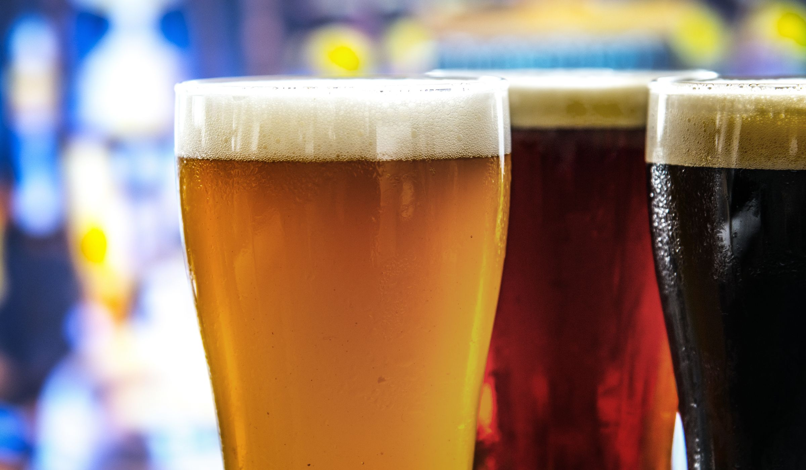
Photo and video credits
The photographs come from Wikimedia Commons and pxhere, and the hero video clips from Mixkit. Almost every photograph is public domain (CC0); one is CC BY 2.0 and is credited as its licence asks. The clips are under the Mixkit free licence. Few of these need a credit, but we give one for each. No brewery shown here is a Beer365 customer.
| Image | Title | By | Source and licence | Link |
|---|---|---|---|---|
 | Hop cones | Not named | pxhere, CC0 | Original |
 | File:Biera microbrewery in Amman, 2023.jpg | Makeandtoss | Wikimedia Commons, CC0 | Original |
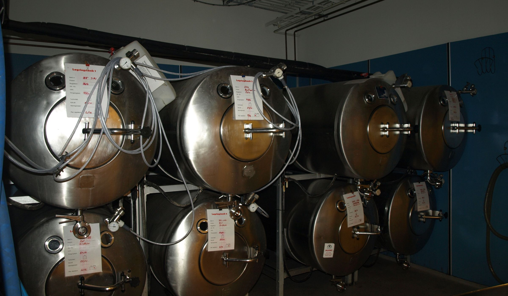 | File:Dugges - Fermentation tanks.jpg | Ojan | Wikimedia Commons, CC0 | Original |
 | Bottling line | DimiTalen | Wikimedia Commons, CC0 | Original |
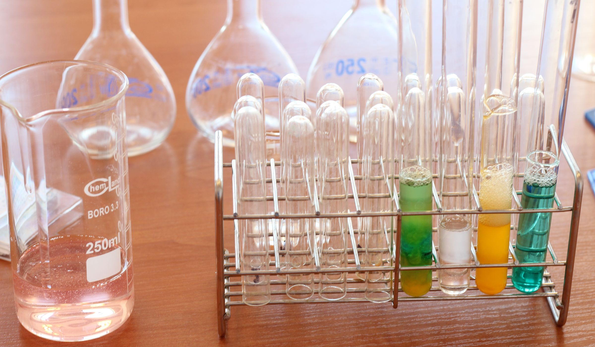 | Laboratory glassware and test tubes | Not named | pxhere, CC0 | Original |
 | File:Urban South Brewery Tanks.jpg | Infrogmation of New Orleans | Wikimedia Commons, CC BY 2.0 | Original |
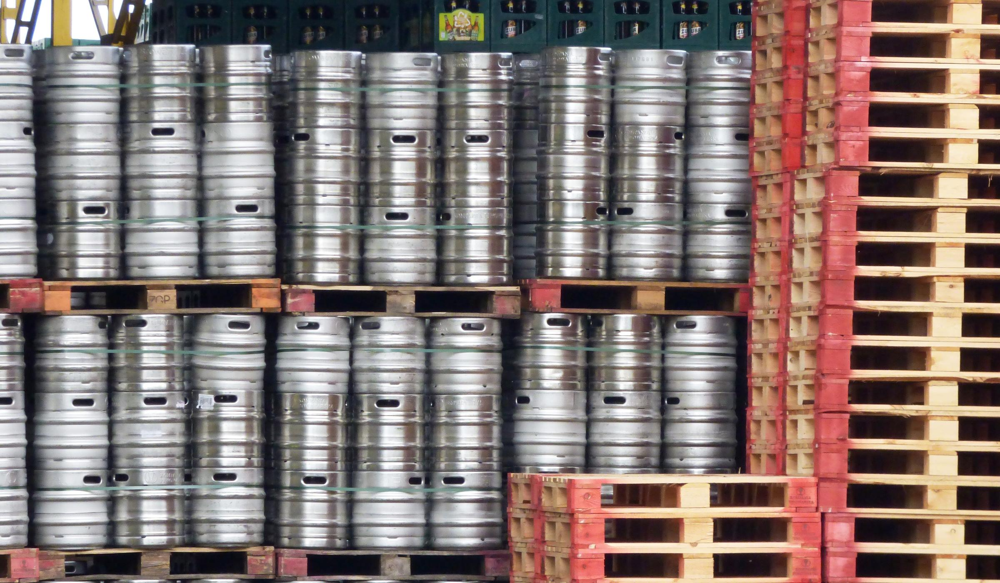 | Stacked aluminium beer kegs | Not named | pxhere, CC0 | Original |
 | Team meeting | Not named | pxhere, CC0 | Original |
 | Beer taps at a bar | Not named | pxhere, CC0 | Original |
 | Green barley field | Not named | pxhere, CC0 | Original |
 | Copper brewhouse vessels | Not named | pxhere, CC0 | Original |
 | File:2014-365-231 Top o' The Tanks (14977042112).jpg | cogdogblog | Wikimedia Commons, CC0 | Original |
 | Test tubes | Not named | pxhere, CC0 | Original |
 | Brewery silos | Not named | pxhere, CC0 | Original |
 | Beer pouring into a glass | rawpixel.com | pxhere, CC0 | Original |
 | Team meeting | Not named | pxhere, CC0 | Original |
| Three glasses of beer | rawpixel.com | pxhere, CC0 | Original | |
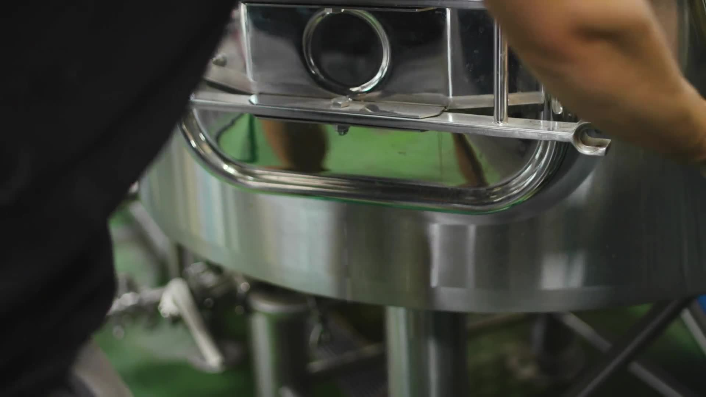 | Brewer opening a mash tun | Mixkit | Mixkit, Mixkit free licence | Original |
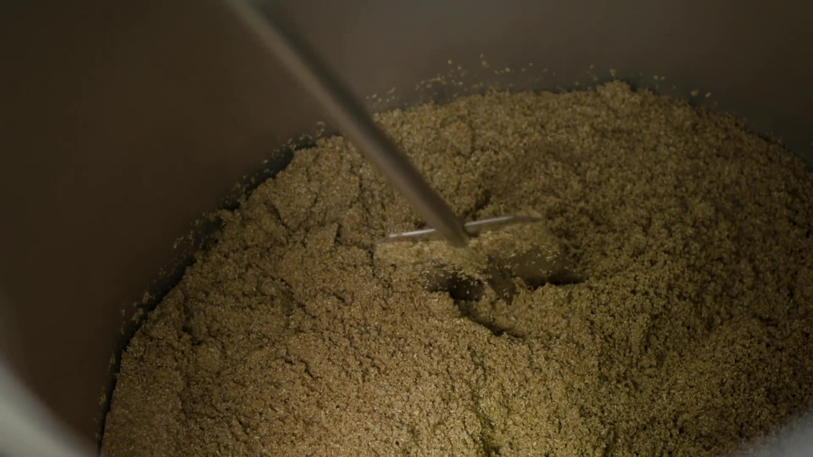 | Stirring the mash | Mixkit | Mixkit, Mixkit free licence | Original |
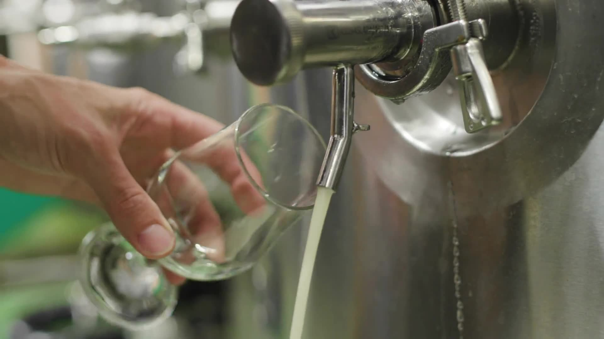 | Sampling beer from a tank | Mixkit | Mixkit, Mixkit free licence | Original |
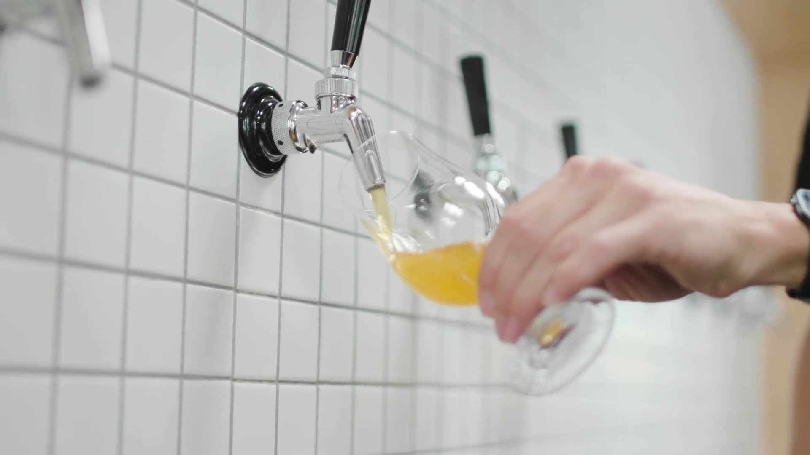 | Beer poured from a wall tap | Mixkit | Mixkit, Mixkit free licence | Original |
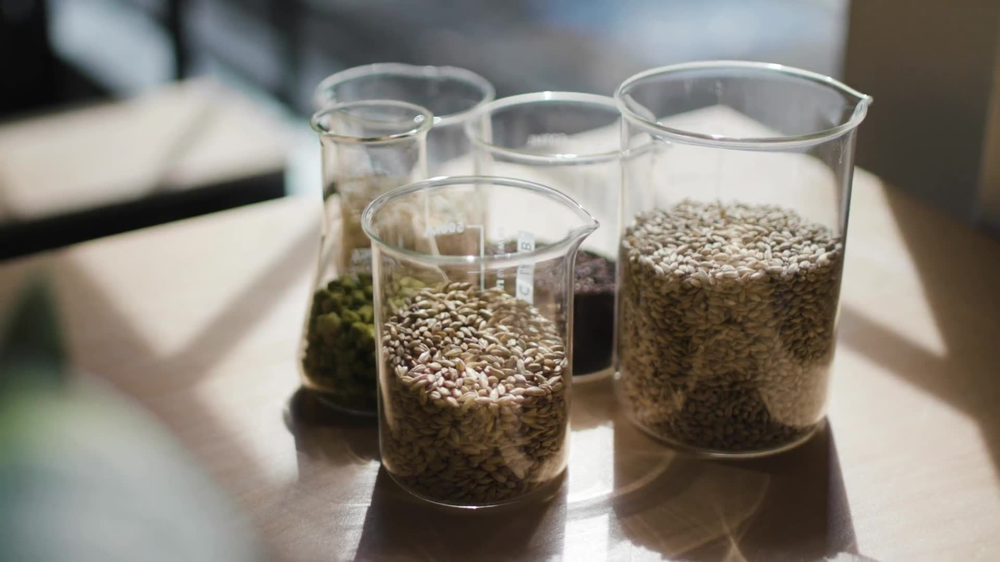 | Beakers of malt and hops | Mixkit | Mixkit, Mixkit free licence | Original |
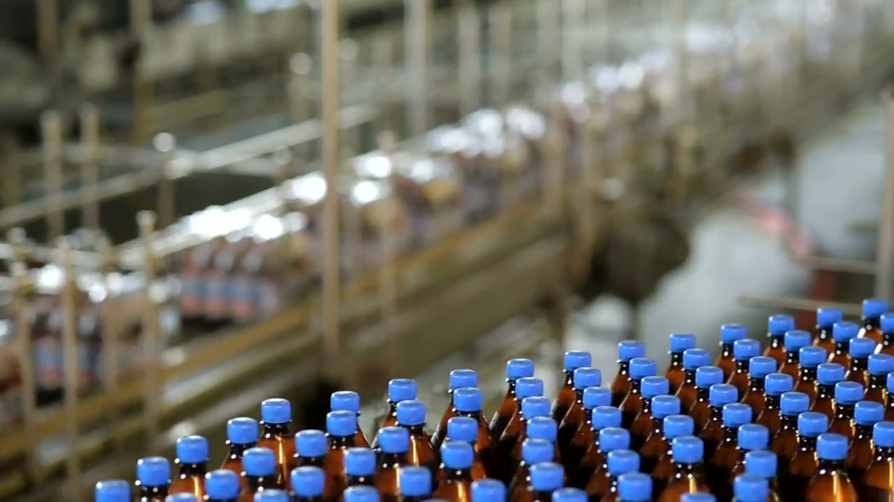 | Beer bottle production line | Mixkit | Mixkit, Mixkit free licence | Original |
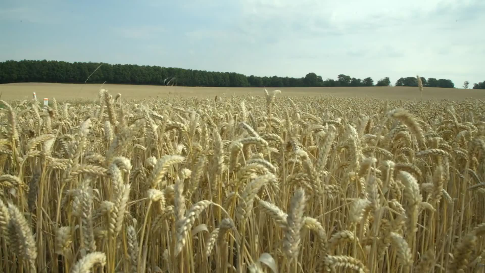 | Grain field ready for harvest | Mixkit | Mixkit, Mixkit free licence | Original |
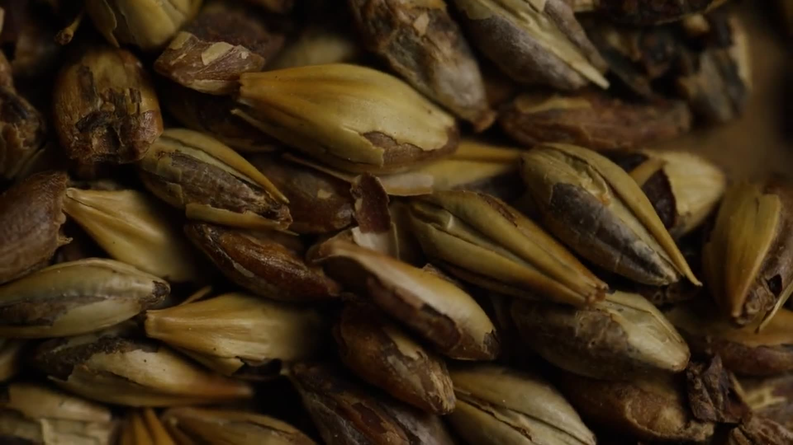 | Malted barley grains | Mixkit | Mixkit, Mixkit free licence | Original |